data(meuse)
data(meuse.grid)
data(meuse.riv)Introduction to Kriging and Spatial Interpolation Using R
Concept of Kriging
Kriging is a geostatistical interpolation method that predicts the value of a variable at an unobserved location using a weighted average of nearby observed values. Unlike deterministic interpolation methods such as inverse distance weighting (IDW), kriging explicitly incorporates the spatial correlation among observations through a variogram model.
The underlying assumption of kriging is that observations located closer together tend to be more similar than those farther apart. This spatial dependence is quantified using the variogram, which describes how similarity decreases with increasing distance.
Suppose observations are available at \(n\) locations, \(\mathbf{s}_1, \mathbf{s}_2, \ldots, \mathbf{s}_n\). The predicted value at an unsampled location \(\mathbf{s}_0\) is given by
\[ \hat{Z}(\mathbf{s}_0)=\sum_{i=1}^{n}\lambda_i Z(\mathbf{s}_i), \]
where
- \(\hat{Z}(\mathbf{s}_0)\) is the predicted value at location \(\mathbf{s}_0\).
- \(Z(\mathbf{s}_i)\) is the observed value at location \(\mathbf{s}_i\).
- \(\lambda_i\) is the weight assigned to the \(i\)th observation.
Unlike deterministic interpolation methods, the kriging weights are not determined solely by distance. Instead, they are computed using the spatial covariance (or variogram), so that observations with stronger spatial correlation have greater influence on the prediction.
Basic Idea of Kriging
The fundamental idea behind kriging is that a spatial variable can be decomposed into two components:
- A deterministic trend, which describes the large-scale variation in the data.
- A random error (residual), which captures the small-scale spatial variation.
Mathematically, the spatial process can be expressed as
\[ Z(\mathbf{s}) = m(\mathbf{s}) + \varepsilon(\mathbf{s}), \]
where
- \(Z(\mathbf{s})\) is the observed value at location \(\mathbf{s}\),
- \(m(\mathbf{s})\) is the deterministic trend (or mean structure),
- \(\varepsilon(\mathbf{s})\) is the spatially correlated random error.
The trend represents systematic variation that can often be explained by location or other explanatory variables. The residual component represents the remaining variation after the trend has been removed.
The key assumption in kriging is that the residuals are spatially correlated, meaning that observations at nearby locations tend to have similar residual values.
Rather than modeling the observed data directly, kriging models the spatial dependence of the residuals using a variogram. The variogram describes how the similarity between residuals decreases as the distance between locations increases.
The semivariance is defined as
\[ \gamma(h)=\frac{1}{2}\operatorname{Var}\left[\varepsilon(\mathbf{s})-\varepsilon(\mathbf{s}+h)\right], \]
where \(h\) denotes the separation distance (lag) between two locations.
Once an appropriate variogram model has been fitted to the residuals, it is used to determine the kriging weights. These weights are then used to predict the residual at an unsampled location. Finally, the predicted residual is added back to the estimated trend to obtain the kriging prediction.
The prediction can therefore be written as
\[ \hat{Z}(\mathbf{s}_0) = \hat{m}(\mathbf{s}_0) + \hat{\varepsilon}(\mathbf{s}_0), \]
where
- \(\hat{m}(\mathbf{s}_0)\) is the estimated trend at the prediction location,
- \(\hat{\varepsilon}(\mathbf{s}_0)\) is the kriged residual obtained using the fitted variogram.
This decomposition forms the conceptual foundation of geostatistical interpolation and distinguishes kriging from deterministic interpolation methods such as inverse distance weighting (IDW), which do not explicitly model spatial dependence.
Properties of Kriging
Kriging estimates have the following desirable properties:
- Linear: Predictions are weighted sums of observed values.
- Unbiased: The expected prediction equals the true value.
- Best (Minimum Variance): Among all linear unbiased estimators, kriging minimizes the prediction variance.
These properties are collectively referred to as the Best Linear Unbiased Predictor (BLUP).
Kriging Variance
A major advantage of kriging is that it provides both predictions and their associated uncertainty. The kriging variance is given by
\[ \sigma_K^2 = \sum_{i=1}^{n}\lambda_i\,\gamma(\mathbf{s}_i,\mathbf{s}_0) +\mu, \]
where
- \(\sigma_K^2\) is the kriging variance.
- \(\gamma(\mathbf{s}_i,\mathbf{s}_0)\) is the semivariance between the observed location \(\mathbf{s}_i\) and the prediction location \(\mathbf{s}_0\).
The kriging variance depends on the spatial configuration of the data and the fitted variogram model. It does not depend on the observed values themselves.
Types of Kriging
The most commonly used kriging methods are:
- Simple Kriging (SK): Assumes the population mean is known and constant.
- Ordinary Kriging (OK): Assumes an unknown but constant local mean.
- Universal Kriging (UK): Assumes the mean varies spatially according to a deterministic trend.
- Regression Kriging (RK): Combines regression with kriging of the residuals.
- Co-Kriging: Uses one or more auxiliary variables that are spatially correlated with the primary variable.
Kriging Weights for Different Kriging Approaches
The general kriging estimator is given by
\(\hat{Z}(s_0)=\sum_{i=1}^{n}\lambda_i Z(s_i)\)
where \(\lambda_i\) are the kriging weights, \(Z(s_i)\) are the observed values, and \(s_0\) is the prediction location.
Different kriging approaches use different constraints for the weights.
Ordinary Kriging (OK)
Ordinary Kriging assumes that the mean is unknown but constant:
\(E[Z(s)] = \mu\)
To ensure an unbiased estimator, the weights must satisfy:
\(\sum_{i=1}^{n}\lambda_i = 1\)
The kriging weights are obtained by solving:
\[ \begin{bmatrix} \gamma_{11} & \cdots & \gamma_{1n} & 1\\ \vdots & \ddots & \vdots & \vdots\\ \gamma_{n1} & \cdots & \gamma_{nn} & 1\\ 1 & \cdots & 1 & 0 \end{bmatrix} \begin{bmatrix} \lambda_1\\ \vdots\\ \lambda_n\\ \eta \end{bmatrix} = \begin{bmatrix} \gamma_{10}\\ \vdots\\ \gamma_{n0}\\ 1 \end{bmatrix} \]
where \(\eta\) is the Lagrange multiplier.
Simple Kriging (SK)
Simple Kriging assumes that the mean is known:
\(E[Z(s)] = \mu\)
There is no constraint that the weights must sum to one.
The weights are obtained from:
\(\mathbf{C}\lambda=\mathbf{c}_0\)
where \(\mathbf{C}\) is the covariance matrix between observed locations and \(\mathbf{c}_0\) is the covariance vector between observations and the prediction location.
The weights are obtained from:
\(\mathbf{C}\boldsymbol{\lambda}=\mathbf{c}_0\)
where \(\mathbf{C}\) is the covariance matrix between observed locations and \(\mathbf{c}_0\) is the covariance vector between observations and the prediction location.
In matrix form,
\[ \begin{bmatrix} C(s_1,s_1) & C(s_1,s_2) & \cdots & C(s_1,s_n)\\ C(s_2,s_1) & C(s_2,s_2) & \cdots & C(s_2,s_n)\\ \vdots & \vdots & \ddots & \vdots\\ C(s_n,s_1) & C(s_n,s_2) & \cdots & C(s_n,s_n) \end{bmatrix} \begin{bmatrix} \lambda_1\\ \lambda_2\\ \vdots\\ \lambda_n \end{bmatrix} = \begin{bmatrix} C(s_1,s_0)\\ C(s_2,s_0)\\ \vdots\\ C(s_n,s_0) \end{bmatrix} \]
where:
- \(\mathbf{C}\) is the covariance matrix among the observed locations.
- \(\boldsymbol{\lambda}\) is the vector of kriging weights.
- \(\mathbf{c}_0\) is the covariance vector between observed locations and the prediction location \(s_0\).
Universal Kriging (UK)
Universal Kriging assumes that the mean varies according to known explanatory variables:
\(E[Z(s)] = \sum_{k=1}^{p}\beta_k f_k(s)\)
The weights must satisfy:
\(\sum_{i=1}^{n}\lambda_i f_k(s_i)=f_k(s_0)\)
for \(k=1,\ldots,p\).
For example, if the trend is:
\(m(s)=\beta_0+\beta_1x+\beta_2y\)
then the constraints are:
\(\sum_i\lambda_i=1\)
\(\sum_i\lambda_i x_i=x_0\)
\(\sum_i\lambda_i y_i=y_0\)
Regression Kriging (RK)
Regression Kriging separates the trend and the spatial residual:
\(Z(s)=m(s)+\varepsilon(s)\)
The prediction is:
\(\hat{Z}(s_0)=\hat{m}(s_0)+\sum_i\lambda_i e(s_i)\)
where \(e(s_i)\) represents the spatial residuals.
The residual weights satisfy:
\(\sum_i\lambda_i=1\)
Summary of Weight Constraints
| Method | Mean Assumption | Weight Constraint |
|---|---|---|
| Simple Kriging | Known constant mean | No constraint |
| Ordinary Kriging | Unknown constant mean | \(\sum_i\lambda_i=1\) |
| Universal Kriging | Trend-based mean | \(\sum_i\lambda_i f_k(s_i)=f_k(s_0)\) |
| Regression Kriging | Regression trend + spatial residual | \(\sum_i\lambda_i=1\) |
Therefore, Ordinary Kriging requires the weights to sum to one, while Universal Kriging extends this condition to preserve the underlying trend structure.
Application with meuse data
head(meuse) x y cadmium copper lead zinc elev dist om ffreq soil lime
1 181072 333611 11.7 85 299 1022 7.909 0.00135803 13.6 1 1 1
2 181025 333558 8.6 81 277 1141 6.983 0.01222430 14.0 1 1 1
3 181165 333537 6.5 68 199 640 7.800 0.10302900 13.0 1 1 1
4 181298 333484 2.6 81 116 257 7.655 0.19009400 8.0 1 2 0
5 181307 333330 2.8 48 117 269 7.480 0.27709000 8.7 1 2 0
6 181390 333260 3.0 61 137 281 7.791 0.36406700 7.8 1 2 0
landuse dist.m
1 Ah 50
2 Ah 30
3 Ah 150
4 Ga 270
5 Ah 380
6 Ga 470head(meuse.grid) x y part.a part.b dist soil ffreq
1 181180 333740 1 0 0.0000000 1 1
2 181140 333700 1 0 0.0000000 1 1
3 181180 333700 1 0 0.0122243 1 1
4 181220 333700 1 0 0.0434678 1 1
5 181100 333660 1 0 0.0000000 1 1
6 181140 333660 1 0 0.0122243 1 1head(meuse.riv) [,1] [,2]
[1,] 182003.7 337678.6
[2,] 182136.6 337569.6
[3,] 182252.1 337413.6
[4,] 182314.5 337284.7
[5,] 182331.5 337122.3
[6,] 182323.9 336986.2# Convert river coordinates matrix to LINESTRING sf object
meuse_riv_sf <- st_sfc(
st_linestring(as.matrix(meuse.riv)),
crs = 28992
)
meuse_riv_sfGeometry set for 1 feature
Geometry type: LINESTRING
Dimension: XY
Bounding box: xmin: 178304 ymin: 325698.5 xmax: 182331.5 ymax: 337684.8
Projected CRS: Amersfoort / RD NewLINESTRING (182003.7 337678.6, 182136.6 337569....meuse_riv_sf <- st_sf(
geometry = meuse_riv_sf
)
meuse_riv_sfSimple feature collection with 1 feature and 0 fields
Geometry type: LINESTRING
Dimension: XY
Bounding box: xmin: 178304 ymin: 325698.5 xmax: 182331.5 ymax: 337684.8
Projected CRS: Amersfoort / RD New
geometry
1 LINESTRING (182003.7 337678...ggplot() +
geom_sf(
data = meuse_riv_sf,
color = "lightblue",
linewidth = 1
)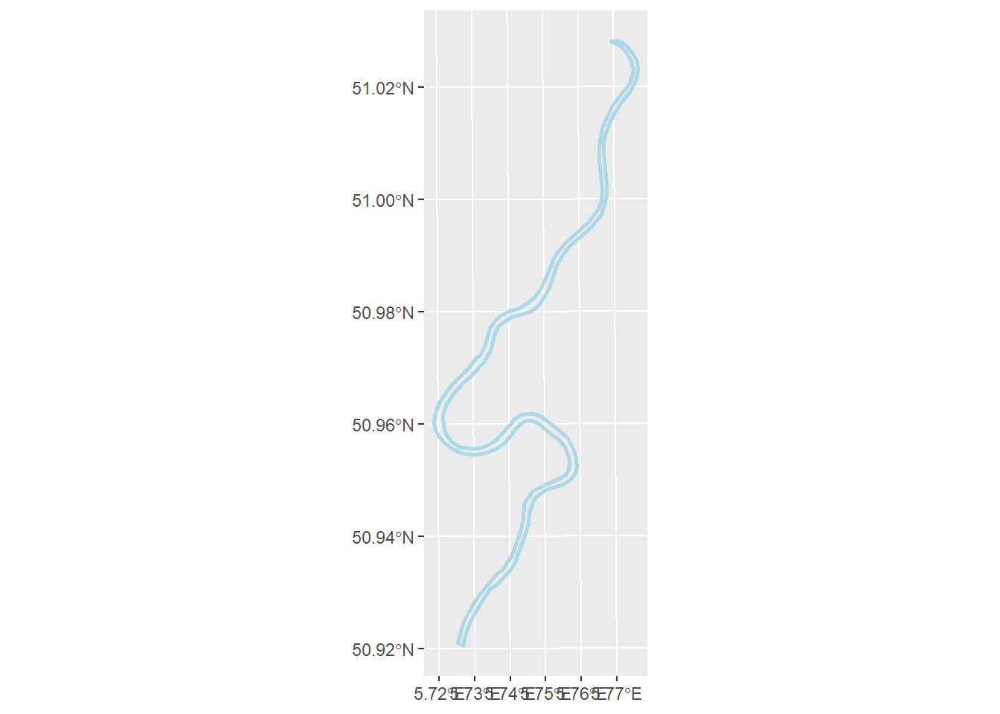
Write the code to take the following plot.
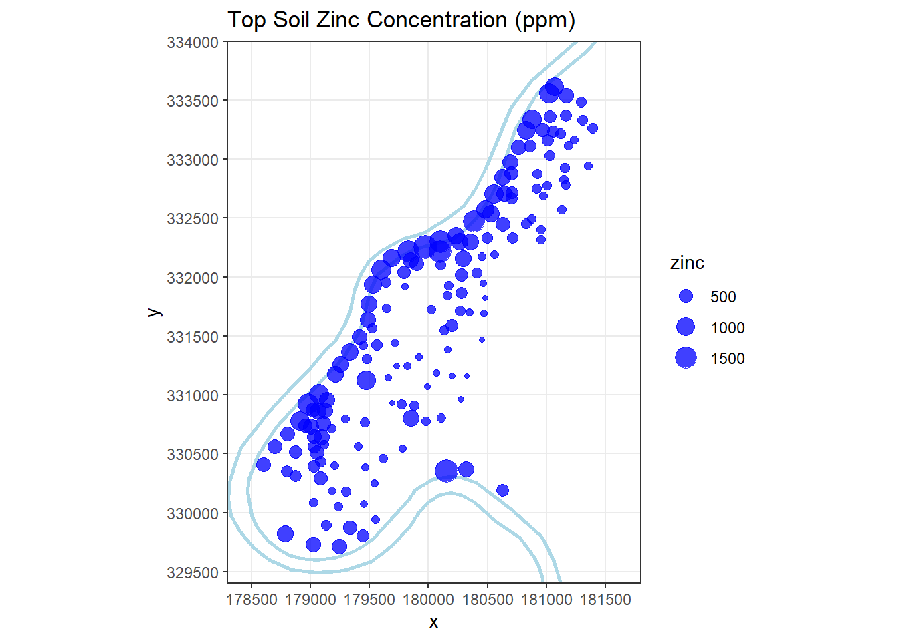
Assessing Spatial Trends and Achieving Stationarity for Geostatistical Modelling
Introduction to Spatial Stationarity
Stationarity is a fundamental assumption in geostatistics because it allows observations from different locations to be combined to estimate spatial dependence. A spatial process is stationary when its statistical properties remain unchanged across space.
A spatial process is strictly stationary if the joint probability distribution remains the same after shifting any set of locations. A less restrictive assumption is weak stationarity (second-order stationarity), which assumes that the mean and variance are constant and that the covariance between two observations depends only on their separation distance (h), rather than their actual locations.
For variogram analysis, intrinsic stationarity is particularly important. It assumes that the variance of differences between observations depends only on the separation distance:
\[Var(Z(x+h)-Z(x)) = 2\gamma(h)\]
where \(\gamma(h)\) is the variogram function.
If a dataset contains a spatial trend, the variogram may continue increasing instead of reaching a stable sill. Therefore, identifying and modelling trends before variogram analysis is essential.
Visual Assessment of Spatial Trends in Zinc Concentration
The meuse dataset contains measurements of zinc concentration collected from a floodplain area. Since zinc concentration is highly skewed, the logarithm of zinc concentration is used for analysis.
library(sf)
library(ggplot2)
library(dplyr)
# Convert coordinates into a data frame
meuse_df <- as.data.frame(meuse)
# Add log-transformed zinc
meuse_df <- meuse_df %>%
mutate(log_zinc = log(zinc),
sqrt_dist = sqrt(dist))ggplot(meuse_df, aes(x = x, y = log_zinc)) +
geom_point() +
geom_smooth(method = "lm", se = FALSE) +
labs(
x = "X coordinate",
y = "Log Zinc concentration",
title = "Spatial Trend of Log Zinc Concentration Along X Coordinate"
)`geom_smooth()` using formula = 'y ~ x'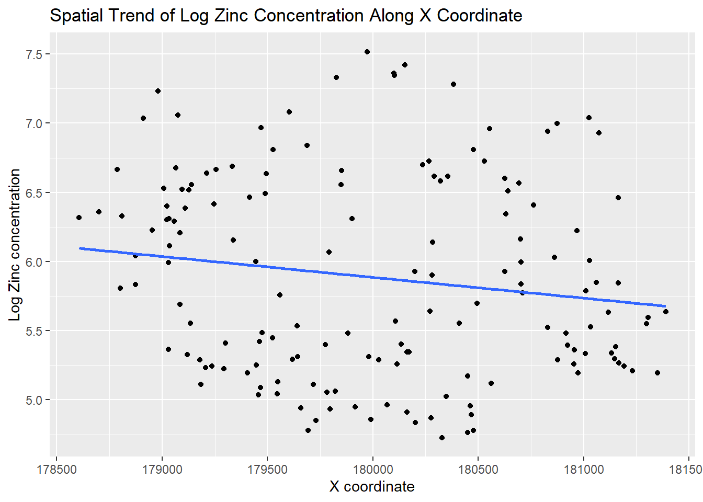
ggplot(meuse_df, aes(x = y, y = log_zinc)) +
geom_point() +
geom_smooth(method = "lm", se = FALSE) +
labs(
x = "Y coordinate",
y = "Log Zinc concentration",
title = "Spatial Trend of Log Zinc Concentration Along Y Coordinate"
)`geom_smooth()` using formula = 'y ~ x'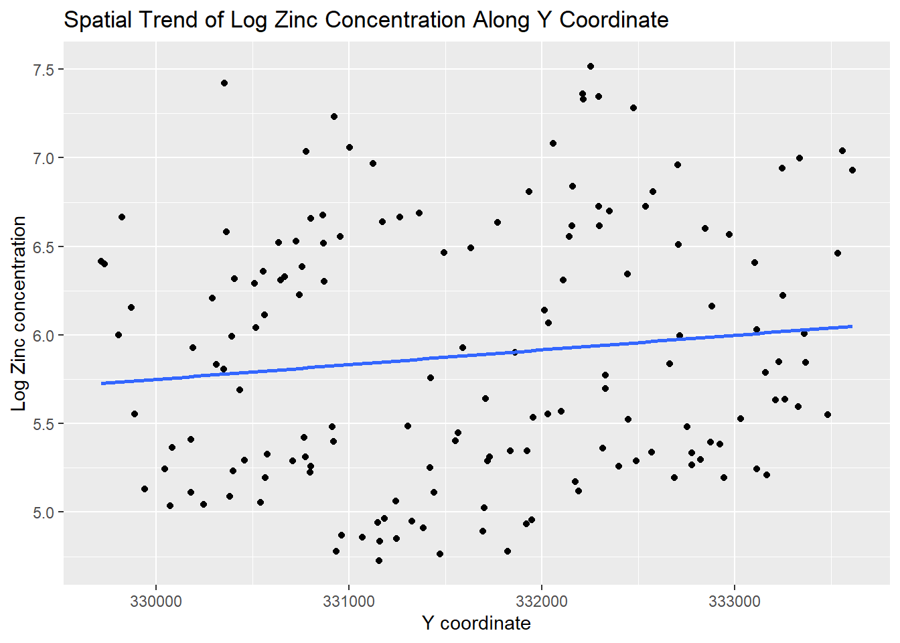
ggplot(meuse_df, aes(x = dist, y = log_zinc)) +
geom_point() +
geom_smooth(method = "lm", se = FALSE) +
labs(
x = "Distance from river",
y = "Log Zinc concentration",
title = "Relationship Between Log Zinc Concentration and Distance"
)`geom_smooth()` using formula = 'y ~ x'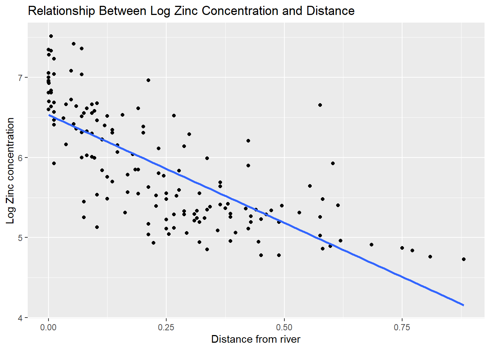
ggplot(meuse_df, aes(x = sqrt_dist, y = log_zinc)) +
geom_point() +
geom_smooth(method = "lm", se = FALSE) +
labs(
x = "Square root of distance from river",
y = "Log Zinc concentration",
title = "Linearised Relationship Between Zinc Concentration and Distance"
)`geom_smooth()` using formula = 'y ~ x'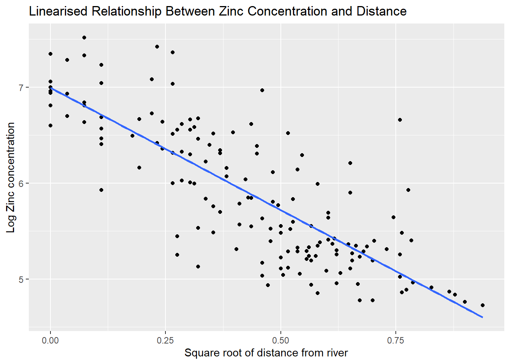
The square-root transformation produces an approximately linear relationship, making it more appropriate for modelling the spatial trend.
Why is a Linear Relationship Important?
A linear trend model is important because geostatistical methods require separation of the deterministic trend component from the random spatial component.
In this context, it is important to have a linear relationship because many spatial statistical methods, especially geostatistical models and variogram analysis, rely on the assumption that the systematic trend (or mean structure) can be modelled separately from the spatial correlation.
We now have
\[log(zinc) = \beta_0 + \beta_1\sqrt{distance} + \epsilon\]
This is important because:
- Better estimation of the trend
A linear model provides a simple and interpretable estimate of the large-scale trend (mean variation) in zinc concentration.
The spatial model can then focus on the remaining spatial dependence (the residuals).
- Satisfies assumptions of spatial modelling
Many geostatistical methods assume that after removing a trend, the residuals are approximately stationary.
If a strong nonlinear trend remains, the variogram may continue increasing with distance instead of reaching a stable sill.
- Improves variogram interpretation
The variogram measures spatial dependence:
\[ \gamma(h)=\frac{1}{2}Var(Z(x+h)-Z(x)) \]
If there is an unmodelled trend, differences between distant observations become larger because of the trend rather than because of spatial correlation.
This causes the variogram to rise continuously and prevents identifying important parameters such as the range and sill.
Detailed explanation of the above:
If there is an unmodelled trend, differences between distant observations become larger because of the trend rather than because of spatial correlation.
The spatial process can be written as:
\(Z(s) = m(s) + \varepsilon(s)\)
where:
- \(Z(s)\) is the observed value at location \(s\).
- \(m(s)\) is the spatial trend (mean structure).
- \(\varepsilon(s)\) is the spatially correlated random component.
For two locations separated by a distance vector \(h\), the difference between observations is:
\(Z(s+h)-Z(s) = [m(s+h)-m(s)] + [\varepsilon(s+h)-\varepsilon(s)]\)
The variogram is defined as:
\(\gamma(h)=\frac{1}{2}Var[Z(s+h)-Z(s)]\)
When the trend \(m(s)\) is not modelled, the term:
\(m(s+h)-m(s)\)
increases as the distance \(h\) increases. As a result, the variogram may continue to increase:
\(\gamma(h) \uparrow \quad \text{as } h \uparrow\)
even when the spatial correlation has already reached a stable level.
A common spatial trend model is:
\(m(s)=\beta_0+\beta_1x+\beta_2y\)
where \(x\) and \(y\) are spatial coordinates. After removing the trend, the residuals are:
\(R(s)=Z(s)-m(s)\)
The variogram should then be calculated using the residuals:
\(\gamma_R(h)=\frac{1}{2}Var[R(s+h)-R(s)]\)
This ensures that the variogram measures true spatial dependence rather than the effect of an unmodelled spatial trend.
- Allows accurate prediction
Kriging methods assume that the mean structure is correctly specified.
If the relationship between zinc concentration and distance is incorrectly modelled, predictions at unsampled locations will be biased.
Therefore, transforming distance to make the relationship approximately linear is not just a statistical convenience; it helps separate the deterministic trend from the spatial random component, which is essential for reliable spatial prediction.
R illustration showing three spatial situations:
No spatial correlation → variogram is approximately flat (constant semivariance).
Positive spatial autocorrelation → nearby points are similar, so variogram starts low and increases with distance until reaching a sill.
Unmodelled trend → variogram keeps increasing because differences are caused by the trend rather than spatial dependence.
In-class demo
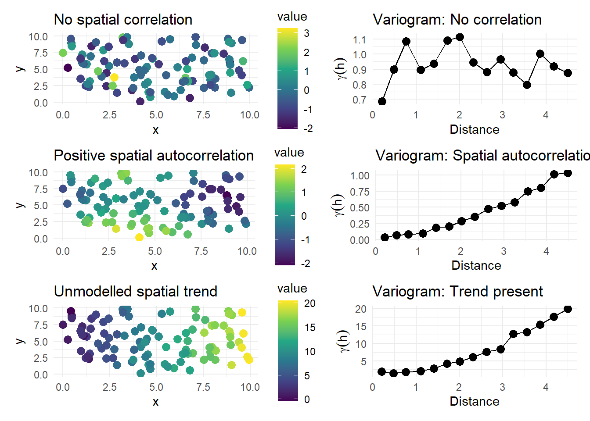
Variogram Cloud and h-Scatterplot
Spatial exploratory analysis is important before fitting a variogram model. Two useful tools for exploring spatial dependence are the variogram cloud and the h-scatterplot.
Variogram Cloud
The variogram cloud displays the semivariance for every pair of observations. For two locations \(s_i\) and \(s_j\), the pairwise semivariance is:
\[ \gamma_{ij}=\frac{1}{2}\left(Z(s_i)-Z(s_j)\right)^2 \]
where:
- \(Z(s_i)\) and \(Z(s_j)\) are observations at two spatial locations.
- The distance between the locations is represented by \(h\).
The variogram cloud plots:
- x-axis: distance between locations (\(h\))
- y-axis: pairwise semivariance (\(\gamma_{ij}\))
Interpretation
A variogram cloud is useful for:
- Detecting spatial autocorrelation
When nearby observations have similar values:
\[ Z(s_i) \approx Z(s_j) \]
the semivariance is small:
\[ \gamma(h) \approx 0 \]
This indicates positive spatial autocorrelation.
- Identifying outliers
Pairs with very large semivariance values may indicate:
- measurement errors
- extreme observations
- unusual spatial patterns
- Detecting anisotropy
Variogram clouds can be examined in different directions to determine whether spatial dependence changes with direction.
h-Scatterplot
An h-scatterplot compares observations separated by a specified spatial lag \(h\).
It plots:
\[ Z(s) \quad \text{against} \quad Z(s+h) \]
where \(h\) represents the distance between two locations.
Interpretation
If observations are positively spatially correlated:
\[ Z(s+h) \approx Z(s) \]
then points will lie close to the 45-degree line.
A strong positive relationship indicates that nearby locations have similar values.
As distance increases, the relationship usually weakens:
\[ Cor(Z(s),Z(s+h)) \rightarrow 0 \]
Relationship between h-Scatterplot and Variogram
The variogram is related to the difference between paired observations:
\[ \gamma(h)=\frac{1}{2}Var(Z(s+h)-Z(s)) \]
When the h-scatterplot shows strong similarity:
\[ Z(s+h)\approx Z(s) \]
the differences are small, resulting in a small variogram value.
When observations become unrelated:
\[ Z(s+h) \not\approx Z(s) \]
the differences increase, producing larger variogram values.
Comparison of Variogram Cloud and h-Scatterplot
| Method | Displays | Purpose |
|---|---|---|
| Variogram cloud | Distance vs pairwise semivariance | Explore spatial dependence, outliers, and anisotropy |
| h-Scatterplot | \(Z(s)\) vs \(Z(s+h)\) | Visualise spatial correlation at a specific lag |
| Empirical variogram | Average semivariance by distance class | Estimate a spatial correlation model |
These exploratory tools help determine whether spatial autocorrelation exists and guide the selection of an appropriate variogram model.
Lagged Scatter plot
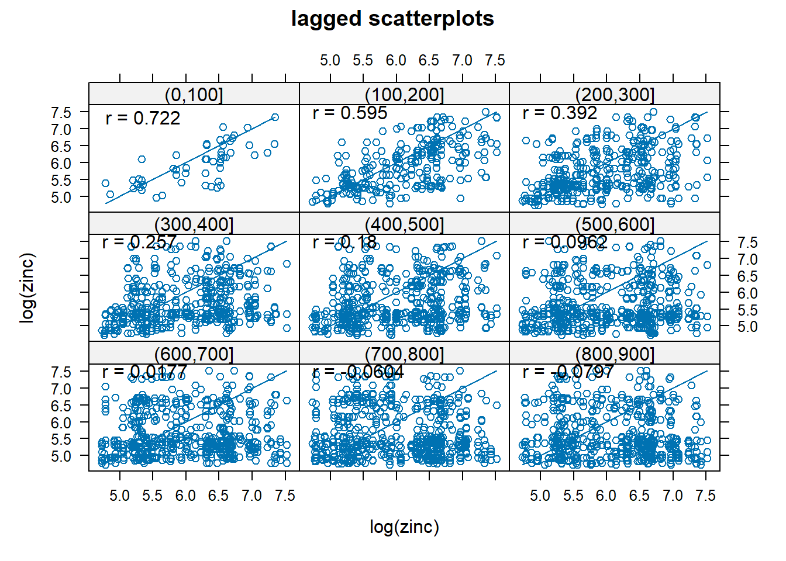
A lagged scatterplot of the log of zinc concentrations in top soil along the river Meuse is shown below. The correlation between pairs of points less than 100 m apart is 0.722. Up to a separation distance of approximately 400 to 500 m, there is still significant spatial correlation between zinc concentrations.
Variogram Cloud
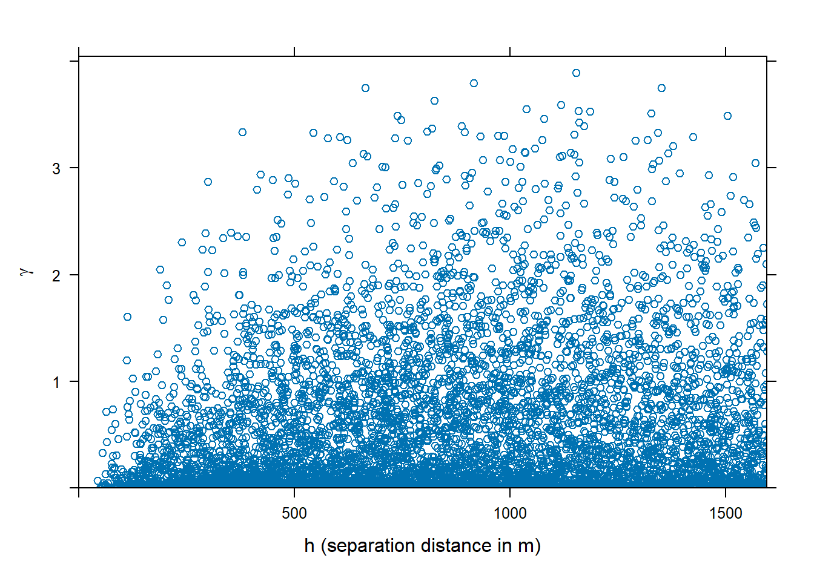
That is, the majority of plots are similar even at higher distances. However, dissimilarity increases with distances up to about 500 m.
Variogram Map for Assessing Directional Dependence (Anisotropy Variogram Map )
Another method for evaluating directional dependence in spatial data is the variogram map. Unlike a directional variogram, where point pairs are classified separately by distance and direction, a variogram map considers both distance and direction simultaneously.
For two observations:
\[ Z(s) \quad \text{and} \quad Z(s+h) \]
the separation vector is:
\[ h=(x,y) \]
where:
- \(x\) represents the horizontal spatial separation.
- \(y\) represents the vertical spatial separation.
For each pair of observations, the semivariance contribution is calculated as:
\[ \gamma(h)=\frac{1}{2}(Z(s)-Z(s+h))^2 \]
This semivariance value is assigned to the grid cell corresponding to the separation vector \(h\).
Construction of a Variogram Map
The steps are:
Calculate all possible pairs of observations.
For each pair, calculate the separation vector:
\[ h=(x_i-x_j,\ y_i-y_j) \]
- Calculate the pairwise semivariance:
\[ \frac{1}{2}(Z(s_i)-Z(s_j))^2 \]
- Assign the semivariance value to the corresponding location in the variogram map.
The map is centred at:
\[ (0,0) \]
because \(h\) represents a relative distance between locations, not an actual geographical location.
Symmetry of the Variogram Map
The variogram map is point symmetric around \((0,0)\) because:
\[ \gamma(h)=\gamma(-h) \]
This means that the separation vector:
\[ (x,y) \]
has the same semivariance as:
\[ (-x,-y) \]
Therefore, opposite directions have identical semivariance values.
Interpreting a Variogram Map
The colour intensity represents the magnitude of semivariance.
- Small semivariance:
\[ \gamma(h) \approx 0 \]
indicates that observations separated by distance \(h\) are similar.
- Large semivariance:
\[ \gamma(h) \text{ is large} \]
indicates weaker spatial similarity.
A threshold can be applied so that only grid cells containing a minimum number of point pairs are displayed. This avoids displaying unreliable estimates based on very few observations.
Detecting Anisotropy
If spatial dependence is the same in all directions, the variogram map will appear approximately circular.
However, if the map is elongated in one direction, it indicates anisotropy.
For example:
- A longer range along the north-east to south-west direction indicates stronger spatial continuity in that direction.
- A shorter range in other directions indicates weaker spatial dependence.
Example: Meuse Zinc Data
For the log-transformed zinc concentrations in the topsoil of the Meuse river area:
\[ Y=\log(Zinc) \]
the variogram map can reveal directional dependence.
If the variogram map shows an elongated pattern along the north-east to south-west axis, it suggests that:
\[ Cor(Z(s),Z(s+h)) \]
remains stronger for locations separated along this direction.
This indicates anisotropic spatial autocorrelation.
R Code: Variogram Map
library(sf)
library(gstat)
# Load Meuse data
data(meuse)
# Convert to sf object
meuse_sf <- st_as_sf(
meuse,
coords = c("x", "y"),
crs = 28992
)
# Variogram map
vg_map <- variogram(
log(zinc) ~ 1,
meuse_sf,
cutoff = 1000,
width = 100,
map = TRUE
)
# Plot variogram map
plot(
vg_map,
main = "Variogram Map of log(Zinc)"
)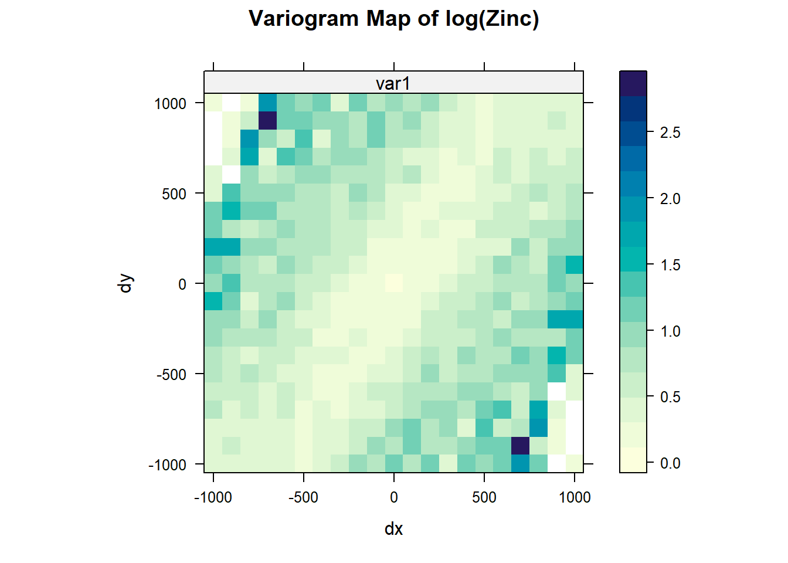
# Variogram map
vg_map <- variogram(
log(zinc) ~ 1,
meuse_sf,
cutoff = 1500,
width = 50,
map = TRUE
)
# Plot variogram map
plot(
vg_map,
main = "Variogram Map of log(Zinc)"
)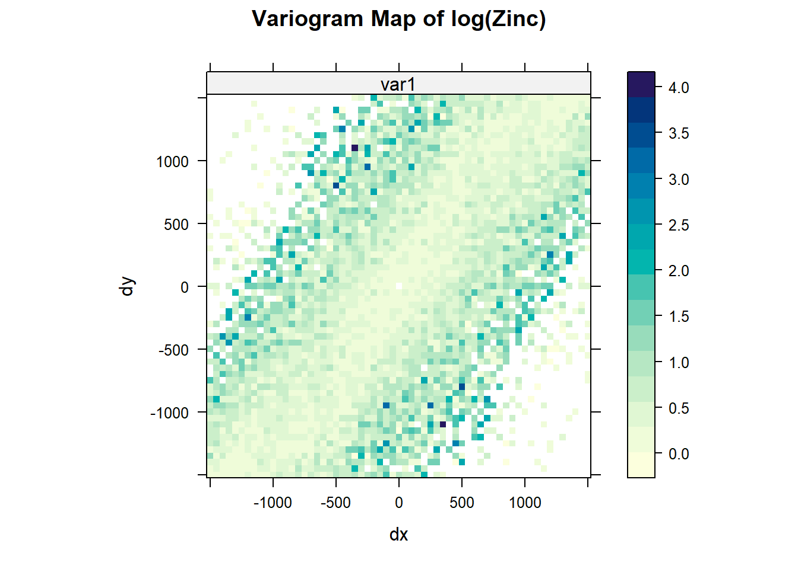
The shape of the variogram map helps identify whether the spatial correlation structure changes with direction, providing evidence of anisotropy.
Cutoff and Width Parameters in a Variogram Map
When creating a variogram map using gstat::variogram(), the parameters cutoff and width control the spatial lag distances used for calculating semivariance values.
Example:
vg_map <- variogram(
log(zinc) ~ 1,
meuse_sf,
cutoff = 1500,
width = 50,
map = TRUE
)1. Cutoff
The cutoff parameter defines the maximum separation distance between pairs of observations included in the variogram calculation.
For example:
cutoff = 1500means that only observation pairs separated by a distance less than or equal to 1500 units are considered.
Mathematically:
\[ 0 < ||h|| \leq 1500 \]
where:
- \(h\) is the separation vector between two locations.
- \(||h||\) is the distance between locations.
Pairs with distances greater than the cutoff value are ignored.
Effect of changing cutoff
A smaller cutoff:
cutoff = 500focuses on short-distance spatial dependence and is useful for studying local autocorrelation.
A larger cutoff:
cutoff = 3000includes more distant pairs and helps identify the overall spatial dependence range.
2. Width
The width parameter defines the size of the grid cells used to group separation vectors in the variogram map.
For example:
width = 50means that the separation distances are divided into intervals of 50 distance units.
The lag distance classes are:
| Distance range | Lag cell |
|---|---|
| 0–50 | 1 |
| 50–100 | 2 |
| 100–150 | 3 |
| … | … |
| 1450–1500 | 30 |
Each cell contains all pairs of observations whose separation vector \(h=(x,y)\) falls within that region.
Relationship Between Cutoff and Width
The approximate number of distance classes is:
\[ \text{Number of lag classes} = \frac{\text{cutoff}}{\text{width}} \]
For the example:
\[ \frac{1500}{50}=30 \]
Therefore, the variogram map contains approximately 30 distance classes in each direction around the origin.
Interpretation of the Variogram Map
A variogram map is centred at:
\[ (0,0) \]
because it represents the separation vector:
\[ h=(x_i-x_j,\ y_i-y_j) \]
rather than the geographical coordinates of the sampling locations.
For every pair of observations, the semivariance contribution is calculated as:
\[ \gamma(h)=\frac{1}{2}(Z(s)-Z(s+h))^2 \]
and assigned to the grid cell corresponding to the separation vector \(h\).
The colour intensity in each cell represents the magnitude of the average semivariance.
- Small values of \(\gamma(h)\) indicate similar observations and stronger spatial autocorrelation.
- Large values of \(\gamma(h)\) indicate dissimilar observations and weaker spatial dependence.
Choosing Cutoff and Width Values
The choice of cutoff and width depends on the spatial scale of the study area.
Common choices are:
Fine resolution
cutoff = 1500
width = 25Provides more spatial detail but fewer pairs in each cell.
Moderate resolution
cutoff = 1500
width = 50Provides a balance between detail and reliability.
Coarse resolution
cutoff = 1500
width = 100Provides smoother maps but less spatial detail.
A smaller width increases spatial resolution, whereas a larger width increases the number of point pairs per cell and produces a smoother variogram map.
Values Plotted in a Variogram Map Cell
In a variogram map, each grid cell contains multiple pairs of observations. Each pair contributes a different semivariance value. Since a single cell cannot display all these values separately, the values are summarized.
For each pair of locations:
\[ Z(s_i) \quad \text{and} \quad Z(s_i+h) \]
the pairwise semivariance contribution is calculated as:
\[ \gamma_i(h)=\frac{1}{2}(Z(s_i)-Z(s_i+h))^2 \]
where:
- \(Z(s_i)\) is the value at location \(s_i\).
- \(Z(s_i+h)\) is the value at a location separated by lag vector \(h\).
Aggregating Values Within a Grid Cell
Suppose a grid cell contains \(N_h\) pairs of observations. The variogram map assigns the average semivariance of these pairs to that cell:
\[ \gamma(h)= \frac{1}{N_h} \sum_{i=1}^{N_h} \frac{1}{2}(Z(s_i)-Z(s_i+h))^2 \]
where:
- \(N_h\) is the number of point pairs falling within the grid cell.
- \(\gamma(h)\) is the value plotted in the heat map.
Therefore, the colour of each cell represents the mean semivariance, not individual pairwise semivariances.
Example
Assume a grid cell contains five pairs of observations. The calculated semivariances are:
| Pair | Semivariance |
|---|---|
| 1 | 2.1 |
| 2 | 3.0 |
| 3 | 2.5 |
| 4 | 4.0 |
| 5 | 3.4 |
The value displayed in the heat map cell is:
\[ \gamma(h)= \frac{2.1+3.0+2.5+4.0+3.4}{5} \]
\[ \gamma(h)=3.0 \]
Thus, the heat map colour corresponds to a semivariance value of \(3.0\).
Minimum Number of Pairs
Cells with very few observation pairs provide unreliable estimates. Therefore, a minimum pair threshold is often applied.
For example:
plot(vg_map, threshold = 4)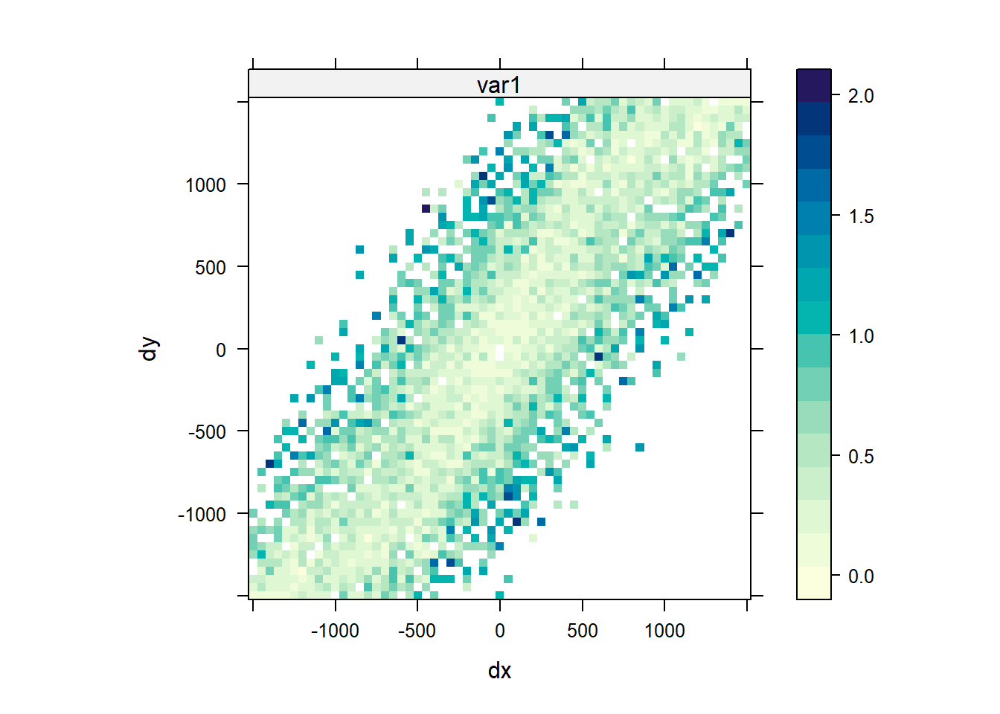
means that only cells containing at least 4 observation pairs are displayed.
Interpretation
The variogram map shows the spatial pattern of average semivariance:
- Low values of \(\gamma(h)\) indicate that locations separated by vector \(h\) have similar values.
\[ Z(s_i) \approx Z(s_i+h) \]
- High values of \(\gamma(h)\) indicate that locations separated by vector \(h\) have different values.
\[ |Z(s_i)-Z(s_i+h)| \text{ is large} \]
Therefore, the heat map represents the average spatial dissimilarity for each distance and direction, which allows detection of directional dependence and anisotropy.
Basic Variogram Models
# Show list of basic variogram models available in gstat
library(kableExtra)
kbl(vgm()) %>%
kable_minimal(full_width = F, position = "left", html_font = "Cambria")| short | long |
|---|---|
| Nug | Nug (nugget) |
| Exp | Exp (exponential) |
| Sph | Sph (spherical) |
| Gau | Gau (gaussian) |
| Exc | Exclass (Exponential class/stable) |
| Mat | Mat (Matern) |
| Ste | Mat (Matern, M. Stein's parameterization) |
| Cir | Cir (circular) |
| Lin | Lin (linear) |
| Bes | Bes (bessel) |
| Pen | Pen (pentaspherical) |
| Per | Per (periodic) |
| Wav | Wav (wave) |
| Hol | Hol (hole) |
| Log | Log (logarithmic) |
| Pow | Pow (power) |
| Spl | Spl (spline) |
| Leg | Leg (Legendre) |
| Err | Err (Measurement error) |
| Int | Int (Intercept) |
show.vgms()
Omnidirectional Variogram
An omnidirectional variogram is a variogram calculated by considering all directions together. It assumes that spatial dependence depends only on the separation distance \(h\) and not on the direction.
In an omnidirectional variogram:
\[ \gamma(h) \]
is a function of distance only.
The direction of the separation vector is ignored, and all pairs of observations with approximately the same distance are grouped together.
Calculation of Omnidirectional Variogram
For two observations:
\[ Z(s_i) \quad \text{and} \quad Z(s_j) \]
the separation distance is:
\[ h=||s_i-s_j|| \]
The pairwise semivariance is:
\[ \gamma_{ij} = \frac{1}{2}(Z(s_i)-Z(s_j))^2 \]
All pairs with similar distances are grouped into distance classes (bins). The empirical variogram is calculated as:
\[ \hat{\gamma}(h) = \frac{1}{2N(h)} \sum_{i=1}^{N(h)} (Z(s_i)-Z(s_i+h))^2 \]
where:
- \(N(h)\) is the number of point pairs separated by distance \(h\).
- \(\hat{\gamma}(h)\) is the average semivariance at distance \(h\).
Interpretation
The omnidirectional variogram describes how similarity between observations changes with distance.
Positive spatial autocorrelation
At small distances:
\[ \gamma(h) \approx 0 \]
because nearby observations have similar values.
As distance increases:
\[ \gamma(h) \uparrow \]
because observations become less similar.
Spatial independence
If there is no spatial correlation:
\[ \gamma(h) \]
remains approximately constant for all distances.
The variogram reaches a sill quickly.
Trend effect
If an unmodelled spatial trend exists:
\[ Z(s)=m(s)+\epsilon(s) \]
the variogram may continue increasing with distance because differences are caused by changes in the mean function:
\[ m(s) \]
rather than spatial dependence.
R Example: Omnidirectional Variogram
library(sf)
library(gstat)
# Load Meuse data
data(meuse)
# Convert to sf object
meuse_sf <- st_as_sf(
meuse,
coords = c("x", "y"),
crs = 28992
)
# Calculate omnidirectional variogram
vg <- variogram(
log(zinc) ~ 1,
meuse_sf,
cutoff = 1500,
width = 100
)
# Plot empirical variogram
plot(
vg,
main = "Omnidirectional Variogram of log(Zinc)",
xlab = "Distance h",
ylab = expression(gamma(h))
)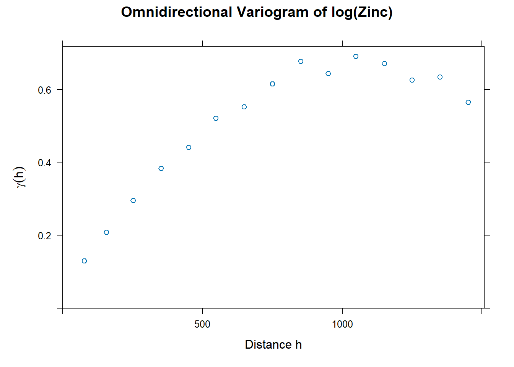
The width parameter defines the lag distance interval (bin size) used to group pairs of observations based on their separation distance.
Width Parameter in an Omnidirectional Variogram
In gstat::variogram(), the width parameter controls the distance interval (lag bin size) used to group pairs of observations according to their separation distance.
Example:
vg <- variogram(
log(zinc) ~ 1,
meuse_sf,
cutoff = 1500,
width = 100
)Meaning of Width
The empirical variogram is not calculated for every individual distance. Instead, observation pairs are grouped into distance classes called lag bins.
When:
width = 100the separation distances are divided into intervals of 100 distance units.
The lag classes are approximately:
| Lag class | Distance range |
|---|---|
| 1 | 0–100 |
| 2 | 100–200 |
| 3 | 200–300 |
| 4 | 300–400 |
| … | … |
| 15 | 1400–1500 |
For each distance class, all point pairs within that interval are used to estimate the average semivariance.
Semivariance Calculation
For two observations:
\[ Z(s_i) \quad \text{and} \quad Z(s_i+h) \]
the pairwise semivariance is:
\[ \gamma_i(h) = \frac{1}{2} (Z(s_i)-Z(s_i+h))^2 \]
For a distance class containing \(N(h)\) pairs, the empirical variogram value is:
\[ \hat{\gamma}(h) = \frac{1}{2N(h)} \sum_{i=1}^{N(h)} (Z(s_i)-Z(s_i+h))^2 \]
where:
- \(N(h)\) is the number of pairs within the lag distance interval.
- \(\hat{\gamma}(h)\) is the average semivariance plotted on the variogram.
Relationship Between Cutoff and Width
The approximate number of lag classes is:
\[ \text{Number of lag classes} = \frac{\text{cutoff}}{\text{width}} \]
For the example:
\[ \frac{1500}{100}=15 \]
Therefore, the variogram contains approximately 15 distance classes.
Effect of Changing Width
Smaller Width
width = 50Distance classes become:
\[ 0-50,\ 50-100,\ 100-150,\ldots \]
Advantages:
- Provides a more detailed variogram.
- Can detect short-range spatial patterns.
Disadvantages:
- Fewer point pairs per class.
- Variogram estimates may become noisy.
Larger Width
width = 200Distance classes become:
\[ 0-200,\ 200-400,\ 400-600,\ldots \]
Advantages:
- More point pairs in each class.
- Produces a smoother variogram.
Disadvantages:
- Reduces spatial resolution.
Interpretation
The width parameter controls the resolution of the distance axis in the variogram.
A small width gives a detailed but potentially noisy variogram, while a large width gives a smoother but less detailed variogram.
For the Meuse zinc example:
cutoff = 1500
width = 100means:
- Consider all observation pairs separated by less than 1500 m.
- Divide distances into 100 m intervals.
- Calculate the average semivariance within each interval.
- Plot these averages to obtain the empirical omnidirectional variogram.
# Calculate omnidirectional variogram
vg <- variogram(
log(zinc) ~ 1,
meuse_sf,
cutoff = 1500,
width = 200
)
# Plot empirical variogram
plot(
vg,
main = "Omnidirectional Variogram of log(Zinc)",
xlab = "Distance h",
ylab = expression(gamma(h))
)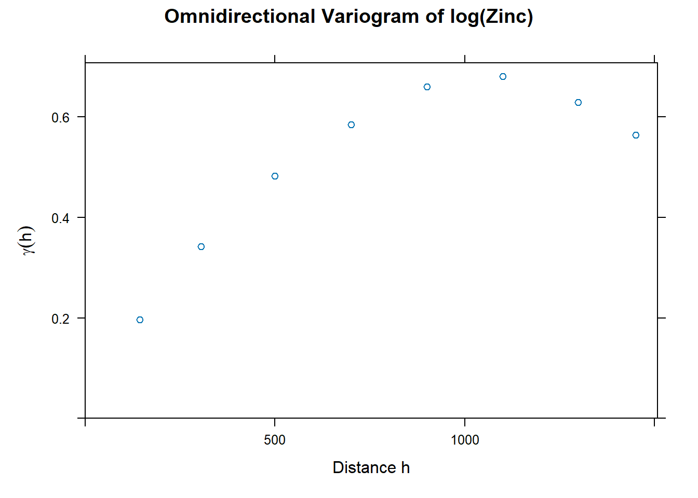
We will use width=100.
Omnidirectional vs Directional Variogram
| Variogram type | Direction considered? | Purpose |
|---|---|---|
| Omnidirectional variogram | No | Overall spatial dependence |
| Directional variogram | Yes | Detect anisotropy |
| Variogram map | Distance and direction jointly | Visualise directional dependence |
An omnidirectional variogram is usually the first step in spatial analysis. If anisotropy is suspected, directional variograms or variogram maps are used for further investigation.
Fitting an Omnidirectional Variogram
An omnidirectional variogram assumes that spatial dependence depends only on the separation distance \(h\) and not on the direction.
The empirical variogram is estimated as:
\[ \hat{\gamma}(h) = \frac{1}{2N(h)} \sum_{i=1}^{N(h)} (Z(s_i)-Z(s_i+h))^2 \]
where:
- \(N(h)\) is the number of observation pairs separated by distance \(h\).
- \(\hat{\gamma}(h)\) is the estimated semivariance.
A theoretical variogram model is then fitted to the empirical variogram.
Load Data and Convert to sf Object
library(sf)
library(gstat)
# Load Meuse data
data(meuse)
# Convert to sf object
meuse_sf <- st_as_sf(
meuse,
coords = c("x", "y"),
crs = 28992
)Calculate Omnidirectional Empirical Variogram
vg_emp <- variogram(
log(zinc) ~ 1,
meuse_sf,
cutoff = 1500,
width = 100
)
# Plot empirical variogram
plot(
vg_emp,
main = "Empirical Omnidirectional Variogram",
xlab = "Distance h",
ylab = expression(gamma(h))
)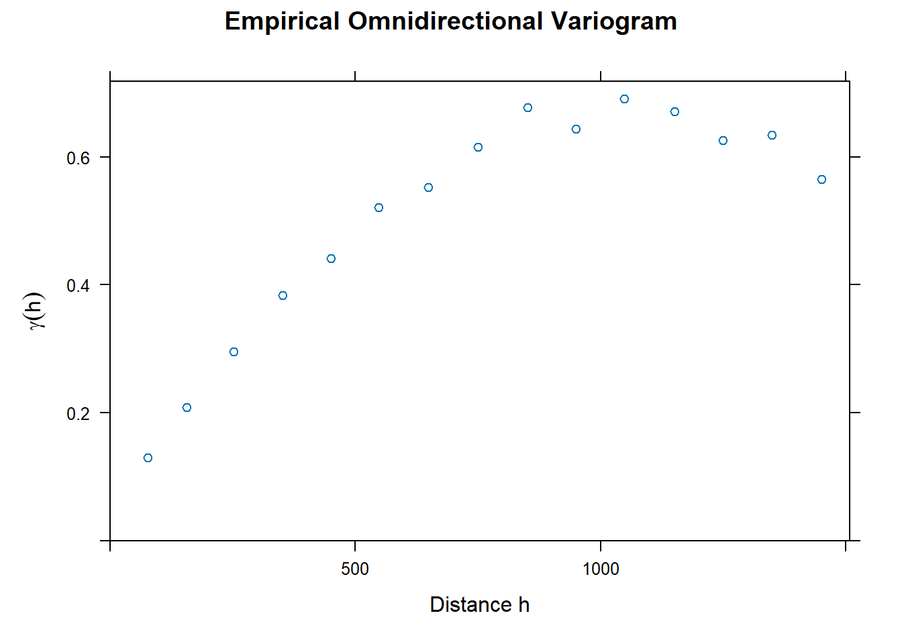
Define Initial Variogram Model
A variogram model consists of:
- Nugget (\(C_0\)): variation at very small distances.
- Partial sill (\(C_1\)): spatially correlated variation.
- Range (\(a\)): distance where spatial correlation disappears.
The general form is:
\[ \gamma(h)=C_0+C_1 f(h) \]
where:
- \(C_0\) = nugget variance.
- \(C_0+C_1\) = sill.
- \(a\) = range.
For example, a spherical model:
\[ \gamma(h)= C_0+C_1 \left[ 1.5\frac{h}{a} - 0.5\left(\frac{h}{a}\right)^3 \right] \]
for:
\[ 0<h<a \]
and:
\[ \gamma(h)=C_0+C_1 \]
for:
\[ h\geq a \]
Fit Spherical Variogram Model
# Initial model
vg_model <- vgm(
psill = 0.6,
model = "Sph",
range = 800,
nugget = 0.1
)
# Fit model
vg_fit <- fit.variogram(
vg_emp,
model = vg_model
)
vg_fit model psill range
1 Nug 0.06159529 0.0000
2 Sph 0.58981594 942.5242Plot Fitted Variogram
plot(
vg_emp,
vg_fit,
main = "Fitted Omnidirectional Variogram",
xlab = "Distance h",
ylab = expression(gamma(h))
)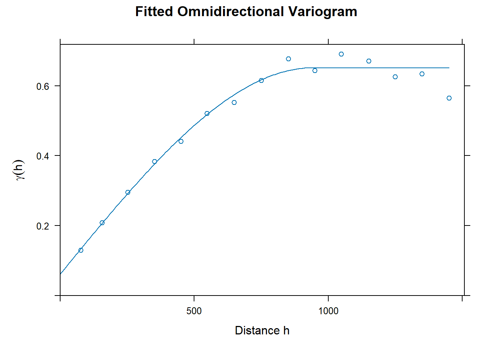
Interpretation of the Fitted Model
The fitted variogram provides estimates of:
| Parameter | Meaning |
|---|---|
| Nugget (\(C_0\)) | Measurement error or microscale variation |
| Partial sill (\(C_1\)) | Spatially correlated variation |
| Sill (\(C_0+C_1\)) | Total variance after reaching stability |
| Range (\(a\)) | Maximum distance of spatial dependence |
If the variogram reaches a sill at distance \(a\), observations separated by distances greater than \(a\) are approximately spatially independent.
Interpretation of the Fitted Omnidirectional Variogram Model
The fitted variogram model is:
| Model | Partial sill (\(psill\)) | Range |
|---|---|---|
| Nug | 0.0616 | 0 |
| Sph | 0.5898 | 942.5 |
The fitted model is a nugget + spherical variogram model:
\[ \gamma(h)=C_0+C_1Sph(h) \]
where:
- \(C_0\) is the nugget variance.
- \(C_1\) is the partial sill representing spatially correlated variation.
- \(a\) is the range parameter.
Nugget Effect
The nugget component is:
\[ C_0=0.0616 \]
The nugget represents variation that occurs at very small spatial distances. It includes:
- measurement errors,
- microscale variation,
- spatial variation occurring at distances smaller than the sampling interval.
The relatively small nugget value indicates that unexplained local variation is low compared with the total spatial variation.
Spherical Component
The spherical component has:
\[ C_1=0.5898 \]
and range:
\[ a=942.5 \]
The partial sill represents the amount of variation explained by spatial autocorrelation.
The range indicates the maximum distance over which observations are spatially correlated.
Therefore:
\[ h < 942.5 \]
indicates spatial dependence, while:
\[ h > 942.5 \]
indicates that observations are approximately spatially independent.
Total Sill
The total sill is the sum of the nugget and partial sill:
\[ \text{Sill}=C_0+C_1 \]
Substituting the fitted values:
\[ \text{Sill}=0.0616+0.5898 \]
\[ \text{Sill}=0.6514 \]
Therefore, the variogram stabilizes at approximately:
\[ \gamma(h)=0.6514 \]
Strength of Spatial Dependence
The proportion of variance explained by spatial dependence can be calculated as:
\[ \text{Spatial dependence ratio} = \frac{C_1}{C_0+C_1} \]
Using the fitted values:
\[ = \frac{0.5898}{0.0616+0.5898} \]
\[ =0.906 \]
or approximately:
\[ 90.6\% \]
This indicates strong spatial dependence.
Overall Interpretation
The fitted nugget-spherical model indicates that:
- The nugget variance is small (\(0.0616\)), suggesting limited measurement error and microscale variation.
- Most of the variability is explained by spatial structure (\(0.5898\)).
- Log zinc concentrations are spatially correlated up to approximately 942.5 m.
- Locations closer than 942.5 m tend to have similar zinc concentrations.
- Locations separated by larger distances are approximately independent.
A summary statement is:
The omnidirectional variogram was fitted using a nugget-spherical model. The fitted model had a nugget variance of 0.0616, a partial sill of 0.5898, and a spatial range of 942.5 m. Approximately 90.6% of the total variance was explained by spatial dependence, indicating strong spatial autocorrelation in log zinc concentrations.
Why Omnidirectional Variogram Can Be Misleading
When all directions are combined:
- Strong spatial dependence in one direction is averaged with weaker dependence in another direction.
- The estimated range may represent an average range rather than the true directional ranges.
- Directional patterns and anisotropy may be hidden.
For example:
Suppose the true ranges are:
| Direction | Range |
|---|---|
| North-east to South-west | 1500 m |
| East-west | 500 m |
An omnidirectional variogram may show an intermediate range, which does not represent either direction accurately.
Detecting Anisotropy
When anisotropy is suspected, use:
- Directional variograms
The variogram is calculated separately for different directions:
\[ \gamma(h,\theta) \]
Example directions:
- \(0^\circ\)
- \(45^\circ\)
- \(90^\circ\)
- \(135^\circ\)
vg_directional <- variogram(
log(zinc) ~ 1,
meuse_sf,
alpha = c(0,45,90,135),
cutoff = 2000,
width = 100
)
plot(vg_directional)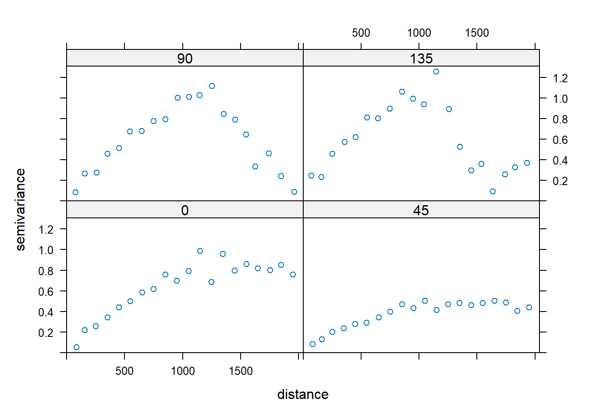
- Variogram map
A variogram map considers distance and direction jointly.
The separation vector is:
\[ h=(x,y) \]
and the semivariance contribution:
\[ \frac{1}{2}(Z(s)-Z(s+h))^2 \]
is assigned to the corresponding lag cell.
An elongated pattern in the variogram map indicates directional dependence.
Summary
An omnidirectional variogram is useful when the process is approximately isotropic:
\[ \gamma(h) \]
depends only on distance.
However, for anisotropic processes:
\[ \gamma(h,\theta) \]
depends on both distance and direction. Therefore, directional variograms or variogram maps should be used to identify and model anisotropy.
Distinguishing Between Isotropy and Anisotropy
The procedure for distinguishing between isotropy and anisotropy is based on comparing variogram models calculated in different directions.
First, directional variograms are calculated for several spatial directions. A variogram model is then fitted separately to each directional variogram.
The fitted models are compared based on their:
- nugget (\(C_0\)),
- sill (\(C_0+C_1\)),
- range (\(a\)).
If the fitted variogram parameters are approximately the same in all directions, the spatial process is considered isotropic.
Mathematically:
\[ \gamma(h,\theta)=\gamma(h) \]
where the semivariance depends only on distance \(h\) and not on direction \(\theta\).
If the variogram parameters differ among directions, the process is considered anisotropic:
\[ \gamma(h,\theta)\neq\gamma(h) \]
where the spatial dependence changes with direction.
Types of Anisotropy
Anisotropy can be classified into three main categories:
- Geometric anisotropy
- Zonal anisotropy
- Mixed anisotropy
1. Geometric Anisotropy
In geometric anisotropy, the sill remains constant across directions, but the range changes with direction.
The variogram reaches the same sill:
\[ C_0+C_1=\text{constant} \]
but the range varies:
\[ a(\theta_1)\neq a(\theta_2) \]
This means that the distance over which spatial correlation exists differs depending on the direction.
For example:
- Along one direction, spatial dependence may extend up to 1500 m.
- Along another direction, spatial dependence may disappear after 500 m.
When sample pairs have the same separation distance but different directions:
- the sill remains the same,
- the range changes.
Geometric anisotropy is often handled by rescaling distances along different directions.
2. Zonal Anisotropy
In zonal anisotropy, both the sill and range vary with distance and direction.
The variogram parameters satisfy:
\[ C_0+C_1(\theta_1)\neq C_0+C_1(\theta_2) \]
and:
\[ a(\theta_1)\neq a(\theta_2) \]
Therefore, observations separated by the same distance can have different levels of spatial variability depending on direction.
A zonal anisotropic model usually consists of two or more directional variogram structures:
\[ \gamma(h)= \gamma_1(h)+\gamma_2(h)+...+\gamma_n(h) \]
Zonal anisotropy is less common in natural processes because it requires different spatial structures operating in different directions.
3. Mixed Anisotropy
Mixed anisotropy occurs when both the sill and range vary with direction.
Therefore:
\[ C_0+C_1(\theta) \]
and:
\[ a(\theta) \]
change with direction.
This type of anisotropy is commonly observed in natural phenomena.
Examples include:
- geological formations,
- soil properties,
- environmental processes.
For example, geological structures often have:
- a larger spatial range in the horizontal direction,
- a smaller spatial range in the vertical direction.
This occurs because geological layers usually extend farther horizontally than vertically.
Summary of Anisotropy Types
| Type | Sill changes with direction? | Range changes with direction? |
|---|---|---|
| Isotropy | No | No |
| Geometric anisotropy | No | Yes |
| Zonal anisotropy | Yes | Yes |
| Mixed anisotropy | Yes | Yes |
In practice, directional variograms and variogram maps are used to identify these anisotropic structures before fitting a final spatial model.
How to proceed
There is clear evidence of anisotropy in the variograms, with the highest level of spatial correlation shown in the 45 degree variogram. The \(45^\circ\) variogram shows the strongest spatial continuity, as it reaches the sill at the greatest distance, indicating a longer range of spatial dependence.
When the sill appears to be different in different directions, this suggests a trend in the data. There are a few ways to address this:
fit a nested semivariogram model with an infinite range in one direction
fit a semivariogram along one direction with no trend
fit a trend to the data, and then fit a semivariogram with a sill to the residuals
Meuse dataset handling
There is clear evidence of anisotropy in the variograms. Anisotropy means that spatial correlation depends on direction. In other words, observations separated by the same distance may be more similar in one direction than in another.
If directional variograms (e.g., 0°, 45°, 90°, and 135°) have different shapes or reach the sill at different distances, the spatial process is anisotropic rather than isotropic.
The highest level of spatial correlation is shown in the 45° variogram. A variogram with the highest spatial correlation typically has:
- the slowest increase in semivariance with distance,
- the largest range, meaning observations remain similar over longer distances, or
- reaches the sill at the greatest distance.
This indicates that observations along the 45° direction remain correlated over larger distances than in other directions. Therefore, the 45° direction exhibits the greatest spatial continuity.
When the sill appears to be different in different directions, this suggests the presence of a trend in the data. Under second-order stationarity, the variance is constant throughout the study region. Consequently, directional variograms should eventually level off at the same sill, even if their ranges differ because of geometric anisotropy.
However, if the sills differ substantially between directions, this often indicates that the assumption of stationarity has been violated. One common reason is the presence of a spatial trend (drift).
For example, suppose zinc concentration gradually increases from southwest to northeast. Then:
- observations that are far apart in the direction of the trend will differ greatly,
- semivariance will continue increasing with distance, and
- the variogram may reach a much higher sill or may not level off at all.
Thus, differences at large distances are caused not only by spatial dependence but also by the underlying trend.
There are several ways to address this:
Fit a nested semivariogram model with an infinite range in one direction.
This approach models the trend as an additional component with an extremely large (effectively infinite) range. The infinite-range structure captures the large-scale variation (trend), while the finite-range structure models the local spatial correlation. This separates broad-scale and local-scale spatial variation within the variogram model.
Fit a semivariogram along one direction with no trend.
If one direction appears approximately stationary (for example, the 45° direction), estimate the variogram using only data pairs aligned with that direction. Since there is little or no trend in that direction, the estimated variogram better represents the underlying spatial dependence. This approach is useful when the trend is mainly confined to another direction.
Fit a trend to the data, and then fit a semivariogram to the residuals.
This is the most common approach in geostatistics. The observed process is represented as
\[ Z(\mathbf{x}) = m(\mathbf{x}) + \varepsilon(\mathbf{x}), \]
where
- \(m(\mathbf{x})\) is the deterministic trend, and
- \(\varepsilon(\mathbf{x})\) is the residual spatial process.
After estimating the trend, the residuals are computed as
\[ \hat{\varepsilon}(\mathbf{x}) = Z(\mathbf{x}) - \hat{m}(\mathbf{x}). \]
A semivariogram is then fitted to the residuals rather than the original observations. If the trend has been adequately removed, the residual variogram should stabilize at a common sill and satisfy the stationarity assumption.
Interpretation
Suppose the directional variograms show that:
- the 45° direction has the largest range and the lowest semivariance, indicating the strongest spatial continuity; and
- the 135° direction reaches a higher sill or continues to increase, indicating the presence of a spatial trend.
A suitable interpretation is:
The directional variograms indicate anisotropy. The 45° direction exhibits the greatest spatial continuity, with observations remaining correlated over longer distances. In contrast, the variogram in the 135° direction reaches a higher sill (or continues to increase), suggesting the presence of a spatial trend. Because differing sills violate the assumption of stationarity, the trend should be modelled or removed before fitting the final variogram for spatial prediction.